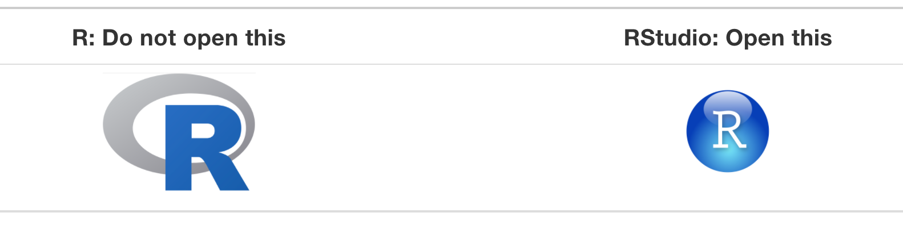
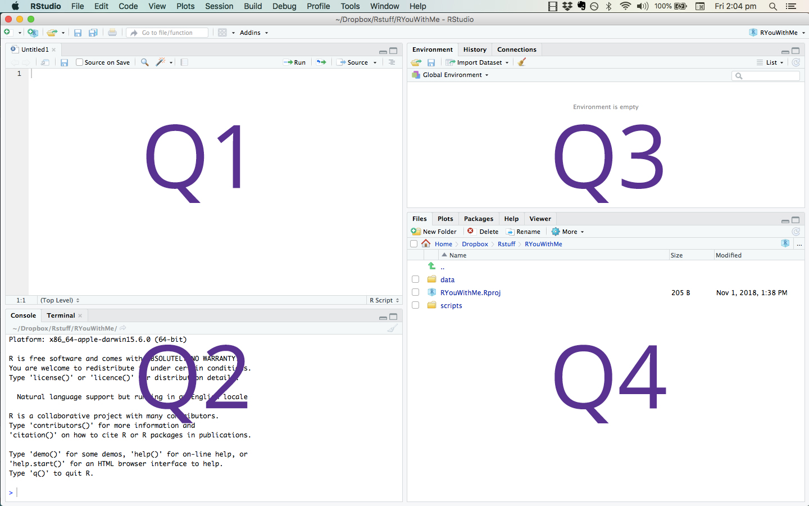

1 / 200 * 30
#> [1] 0.15
(59 + 73 + 2) / 3
#> [1] 44.66667
sin(pi / 2)
#> [1] 1Basic R Programming
Setting Up Your Environment
Before getting started we will need to install R and RStudio.
Installing R
We can download R from CRAN, the comprehensive R archive network. CRAN is a server used to distribute R and R packages. If you don’t have R installed already you can do so here.
Installing RStudio
With R installed, let’s go ahead and install RStudio. RStudio is a convenient IDE (integrated development environment) for R programming. Download and install the RStudio Desktop client.
Helpful Links
From the RStudio Education page:
For beginner-friendly installation instructions, we recommend the free online ModernDive chapter Getting Started with R and RStudio. You may also enjoy the Basic Basics lesson unit from R-Ladies Sydney, which provides an opinionated tour of RStudio for new users and a step-by-step guide to installing and using R packages.
Difference between R and RStudio
For those of you who may be unfamiliar with using an IDE, RStudio is simply a convenient way for us to interact with R. You can think of R as the engine, powering the car, and RStudio as the controls and dashboard for driving. For 559, we won’t interact directly with R very often, instead we will work with R directly from RStudio.

Interacting with RStudio
After opening RStudio you will see something similar to the image below, where the application is divided into different panes. Each pane serves a different purpose:
Q1: contains scripts you are working from and sometimes data views
Q2: the console where you run the code
Q3: the environment page, code history, and build tools
Q4: files, plots, packages, help documentation

Coding in RStudio
Let’s begin by using the Console to interact with R.
Using R as a Calculator
We can use R as a basic calculator.
Creating New Objects
We can create new object using the assignment operator <- as follows:
x <- 3 * 4
secret_password <- "password1234"In R, object names are case sensitive, must start with a letter and can contain numbers, letters, underscores and periods.
You can look at objects by typing their name into the console:
x[1] 12secret_password[1] "password1234"If you type an object that hasn’t been defined yet you will get an error. For example,
Secret_PasswordError: object 'Secret_Password' not foundCalling Functions in R
R has many built-in functions and you can also create your own. Functions can be used to perform tasks in R. They take arguments as inputs, and return outputs. Often you will supply arguments to a function, and it is also possible to use a function’s default values.
For example, there is a function in R called seq(from, to) that creates a sequence of numbers starting at from and ending at to. For example, if we want a sequences of numbers from = 10 all the way to = 20:
# you can add comments to your code using the # key
# anything after the # will not be run as code
# note the code below is equivalent to seq(10, 20)
seq(from = 10, to = 20) [1] 10 11 12 13 14 15 16 17 18 19 20If you want to better understand what a specific function in R does you can always look to the documentation by typing a question mark before the function name in the R console, for example ?seq or ?rep.
?seqAdding Comments to Your Code
It is good practice to add comments to your code. These comments can help others understand what you are doing, and more importantly, they will help you remember what you did. How to effectively use comments is part of a larger discussion on how to write effective and understandable code, and if you’re interested take a look at different style guides for R.
# you can add comments to your code using the # key
# anything after the # will not be run as code
#
# note: the code below is equivalent to seq(10, 20)
seq(from = 10, to = 20) [1] 10 11 12 13 14 15 16 17 18 19 20Common Data Types in R
Four of the most common data types used in R are discussed below:
Numeric: The most common data type in R is numeric. A variable or a series will be stored as numeric data if the values are numbers or if the values contains decimals. For example, the following two series are stored as numeric by default:
# numeric series without decimals num_data <- c(3, 7, 2) num_data[1] 3 7 2class(num_data)[1] "numeric"# numeric series with decimals num_data_dec <- c(3.4, 7.1, 2.9) num_data_dec[1] 3.4 7.1 2.9class(num_data_dec)[1] "numeric"Character: The data type character is used when storing text, known as strings in R. The simplest ways to store data under the character format is by using
""around the piece of text:char <- "some text" char[1] "some text"class(char)[1] "character"Factor: Factor variables are a special case of character variables in the sense that it also contains text. However, factor variables are used when there are a limited number of unique character strings. It often represents a categorical variable.
text <- c("test1", "test2", "test1", "test1") # create a character vector class(text) # to know the class[1] "character"text_factor <- as.factor(text) # transform to factor class(text_factor) # recheck the class[1] "factor"Logical: A logical variable is a variable with only two values;
TRUEorFALSEvalue1 <- 7 value2 <- 9 # is value1 greater than value2? greater <- value1 > value2 greater[1] FALSEclass(greater)[1] "logical"
These are four common R data types you’ll see in this class. There are others not listed here. For more detailed descriptions of data types in R there are a number of helpful resources available online, including this discussion of data structures.
Conditional Statements in R
Conditional statements are another useful R tool. These operators work similar in other programming languages but may look unfamiliar if you don’t have experience with R.
If Statements
x <- 10
if (x > 6) {
print("x is greater than 6")
}[1] "x is greater than 6"If-Else Statements
x <- 3
if (x > 6) {
print("x is greater than 6")
} else {
print("x is less than or equal to 6")
}[1] "x is less than or equal to 6"Nested If Statements
x <- 8
y <- 3
if (x > 6) {
if (y < 6) {
print("x is greater than 6 and y is less than 6")
}
}[1] "x is greater than 6 and y is less than 6"